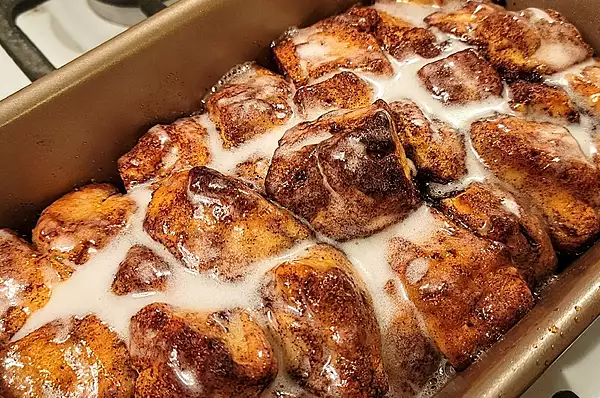

Cinnamon Roll Monkey Bread

Description
This ooey-gooey cinnamon roll monkey bread is devoured every time I make it for breakfast. Refrigerated rolls are quartered and dipped in melted butter and cinnamon sugar so they don't combine when baked and are easy to pull apart when you serve. It's a very creative way to use a can of cinnamon rolls!
Ingredients
- ½ cup white sugar
- 1 teaspoon ground cinnamon
- 1 (12.4 ounce) package refrigerated cinnamon roll dough with icing
- ¼ cup unsalted butter, melted
Steps
- Preheat the oven to 400 degrees F (200 degrees C). Grease a 9x5-inch loaf pan.
- Mix sugar and cinnamon together in a bowl.
- Set icing packet aside. Cut cinnamon rolls into quarters. Dip pieces in melted butter, coat in cinnamon-sugar, and place in the prepared pan.
- Bake in the preheated oven until dough has risen and top is golden brown, 20 to 25 minutes; drizzle icing over top and let cool in the pan for 5 minutes. Turn the monkey bread out onto a plate and serve warm.